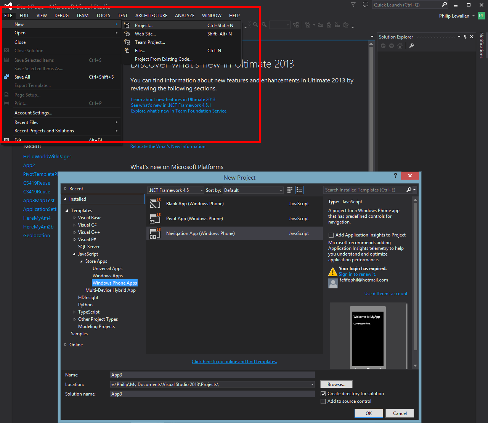

Well I'm glad you asked. For Windows 8.1 if you are a student check to see if your school has Dreamspark. If they don't you will need to go to the a store.
For Visual studio also check to see if your school has Dreamspark if not, go to an online store such as newegg.
For the Bing Maps key go here bingmapsportal.com, sign in with a microsoft account and get the free developer key.
In Visual Studio go to the FILE pulldown menu and select New -> Project.
At this point any tempalte will work just fine but for the sake of simplicity we are not going to choose the Pivot App tempalte as it comes with much more extra code than we need for focusing on the maps.
The blank app would be fine but we are going to want to use a button to move from a data entry page to the page actually housing the map. So the Navigation template will fit the need for a basic structure nicely.
* While Visual Studio Express (the free version) works perfectly by itself, my other classmates and I when we were working in a group found an issue with opening up a project in Visual Studio Express when it was created in Visual Studio Ultimate. I would take care when mixing the use between different versions of Visual Studio.